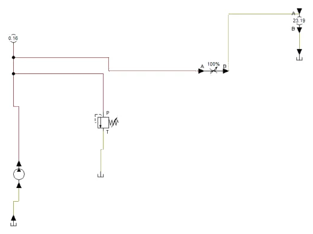
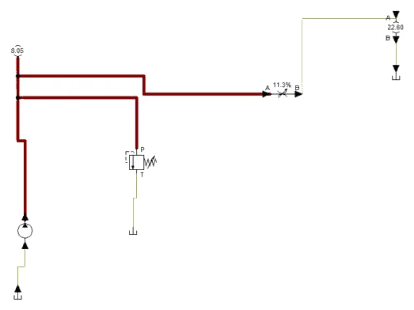
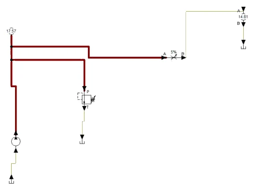
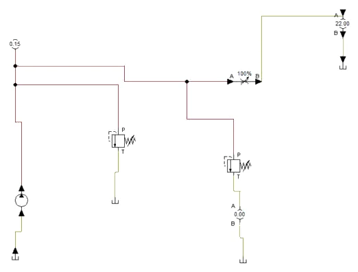
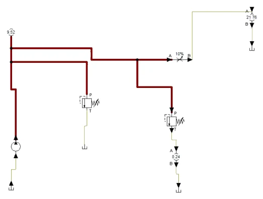
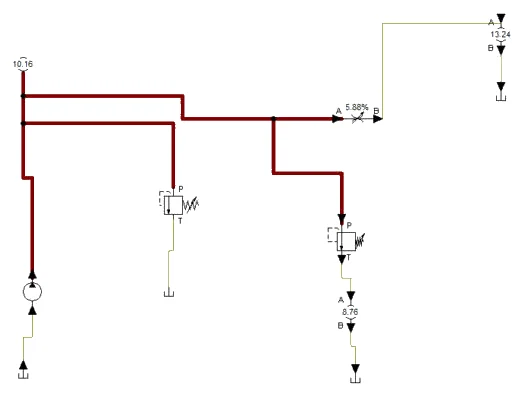
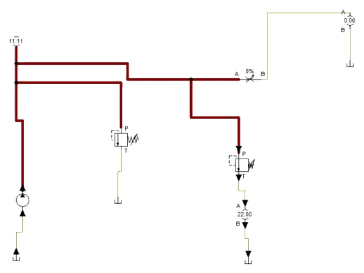

POSTUPAK · RADNI LIST V11 · FLUIDSIM
Postupak V11 · vježbe V29 i V30 · 4 sata
Postupak V11 — karakteristika crpke i sigurnosnog ventila u FluidSIM-H
Cijeli radni list V11 korak po korak u FluidSIM-H: ispitni krug zupčaste crpke s prigušnim ventilom kao teretom i snimanje karakteristike Q–p, te ispitni krug izravno upravljanog sigurnosnog ventila i snimanje karakteristike p–Q. Uz svaki korak su snimke zaslona, tablice simuliranih vrijednosti i potpuna rješenja.
- nacrtati ispitni krug crpke s manometrom, protokomjerom i prigušnim ventilom kao teretom
- mijenjati teret za vrijeme simulacije i zapisivati radne točke
- iz simuliranih točaka izračunati volumetrijski stupanj djelovanja i propuštanje
- snimiti karakteristiku sigurnosnog ventila i odrediti tlak otvaranja i najveći tlak
- razlikovati što simulacija pokazuje, a što se mjeri samo na stolu
O postupku
Ova stranica je postupak za radni list V11: sve što se radi na računalu, od nove sheme do predaje, redom kojim je zadano. Tekst zadatka, sheme, pitanja i rješenja isti su kao na stranicama vježbi V29 Karakteristika crpke i V30 Karakteristika sigurnosnog ventila; ovdje su dopunjeni koracima u FluidSIM-u i rezultatima simulacije.
Rješenja su skrivena ispod svakog pitanja. Najprije riješite sami, a onda otvorite Prikaži rješenje i usporedite.
Gotove sheme (rješenja) za FluidSIM
- PIH_V29_rjesenje_v01.ct — dio A: ispitni krug crpke 16 cm³ × 1450 min⁻¹, propuštanje 0,075 l/(min·MPa), zaštitni ventil 175 bar
- PIH_V30_rjesenje_v01.ct — dio B: ispitni krug sigurnosnog ventila V1 (95 bar, puni protok 22 l/min), zaštitni ventil 140 bar
Datoteke se otvaraju u FluidSIM-H 4 (File → Open). Snimke zaslona napravljene su u FluidSIM-H 4.2 s engleskim sučeljem. Osnove rada u FluidSIM-u (nova shema, knjižnica, crtanje vodova, provjera, simulacija, dijagram put–korak) opisane su u Postupku V01, odjeljak 0.
0 · Prije početka
- File → New (Ctrl + N) otvara novu shemu; Window → Tile Vertically (Shift + F4) postavlja shemu i knjižnicu jednu uz drugu.
- Elemente povucite iz knjižnice na shemu i dvoklikom otvorite njihove dijaloge. Vod crtajte povlačenjem od priključka do priključka; povlačenjem na postojeći vod nastaje račvanje.
- Oznake (1A1, 1V1, 1S1, 0Z1 …) upisuju se elementom Text iz skupine Miscellaneous (uključite Frame Text).
- Execute → Check Superficially (F6) provjerava crtež; Start (F9), Pause (F8), Stop (F5).
- Ručno tipkalo aktivirate klikom mišem (dok držite tipku miša); Shift + klik zadrži ga pritisnutim. Ručica sa zasunom prebacuje se jednim klikom i ostaje u položaju.
- Granični ventil veže se uz cilindar oznakom: dvoklik na cilindar → kartica Actuating Labels → oznaka (npr. 1S2) i položaj na hodu (od–do u mm); ista oznaka upiše se dvoklikom na valjak graničnog ventila (Mechanical connection → Label).
- Dijagram put–korak: iz Miscellaneous povucite State Diagram i na njega povucite cilindre i ventile čije stanje želite pratiti.
FluidSIM-H
Obje vježbe rade se u hidrauličkoj inačici programa. Tlak se prikazuje u MPa (1 MPa = 10 bar), protok u l/min. Manometar i protokomjer pokazuju vrijednosti izravno na shemi dok simulacija teče.
Dio A · V29 Karakteristika crpke
Zadatak
Zupčasta crpka preše HP-1 ima istisninu 16 cm³/okr i pogoni je asinkroni motor nazivnog broja okretaja 1450 min⁻¹. Prema proračunu stvarni protok pri 160 bar treba biti oko 22,0 l/min (ηv = 0,95). Nakon generalnog popravka agregata treba provjeriti odgovara li crpka tim vrijednostima.
Na izlaz crpke spaja se ispitni krug: prigušni ventil služi kao podesivi teret, manometar mjeri tlak, protokomjer protok, a termometar temperaturu ulja. Zaštitni sigurnosni ventil namješten je na 175 bar, iznad najvišeg ispitnog tlaka. Broj okretaja mjeri se optičkim tahometrom, a električna snaga motora mjeračem snage u priključku. Postupnim pritvaranjem prigušnog ventila tlak se diže u koracima od 5 do 160 bar, a pri svakom koraku zapisuju se sve veličine. Ulje HLP 46 mora prije mjerenja postići radnu temperaturu od oko 40 °C.
Sigurnost pri radu
Pažnja
Prije pokretanja provjerite da je zaštitni sigurnosni ventil ugrađen između crpke i prigušnog ventila i namješten — potpuno zatvoren prigušni ventil bez sigurnosnog ventila razara crpku ili crijevo u djeliću sekunde. Prigušni ventil nikad ne zatvarajte naglo. Ne stojte u smjeru brzih spojnica i crijeva pod tlakom. Spojka motora i crpke mora imati zaštitni poklopac; tahometar koristite kroz otvor poklopca. Pri višim tlakovima ulje se brzo grije — ne dirajte vodove i prigušni ventil golom rukom.
Shema
Teorijski protok crpke je Qt = V · n i ovisi samo o broju okretaja. Stvarni protok manji je za propuštanje QL kroz zazore između zupčanika, kućišta i bočnih ploča, koje raste približno proporcionalno tlaku i obrnuto proporcionalno viskoznosti ulja. Volumetrijski stupanj djelovanja je ηv = Q / Qt, a za točan rezultat Qt se računa s izmjerenim, a ne nazivnim brojem okretaja: asinkroni motor pri malom opterećenju vrti se brže od nazivnih 1450 min⁻¹.
Vježba se radi u FluidSIM-u
Koraci postupka vježbe koji se odnose na spajanje na didaktičkoj ploči i mjerenje štopericom ili manometrom izvode se u simulaciji. Gdje simulacija ne može pokazati pojavu iz pokusa, to je napisano uz korak.
A1 · Ispitni krug crpke u FluidSIM-H
- U FluidSIM-H nova shema. Iz Supply Elements povucite Fixed displacement pump (crpka stalne istisnine) i dvoklikom upišite: Revolution 1450 1/min, Displacement 0.016 l (16 cm³), Maximum pressure 25 MPa, Internal leakage 0.075 l/(min·MPa). Propuštanje je odabrano tako da pri 16 MPa iznosi 0,075 · 16 = 1,2 l/min, kao na novoj crpki iz primjera. Usisni priključak crpke spojite na spremnik (Tank).
- Zaštitni sigurnosni ventil (Pressure Control Valves → Pressure relief valve): Nominal Pressure 17.5 MPa (175 bar), Hydraulic resistance 0.0001; priključak P na tlačni vod, T na spremnik. Manometar (Measuring instruments → Manometer) na tlačni vod.
- Teret: prigušni ventil (Shutoff Valves and Flow Control Valves → Throttle valve) iz tlačnog voda, iza njega protokomjer (Flow meter) i spremnik. U dijalogu prigušnog ventila uključite Display Opening Level i Hydraulic resistance smanjite na 0.0002, da pri potpuno otvorenom ventilu tlak bude blizu nule.
- F6 → No superficial errors detected. Termometar, tahometar i mjerač električne snage FluidSIM nema: broj okretaja crpke u simulaciji je stalan, a temperatura i viskoznost ulja se ne mijenjaju.
Što se mijenja u simulaciji
Na stolu se tlak diže pritvaranjem prigušnog ventila rukom. U FluidSIM-H to radi isti dijalog i za vrijeme simulacije: dvoklik na prigušni ventil → Opening Level (postotak otvorenosti) → OK, i manometar i protokomjer odmah pokažu novu radnu točku.
A2 · Snimanje karakteristike Q–p
- Start (F9) uz potpuno otvoren prigušni ventil (100 %): tlak 0,16 MPa, protok 23,19 l/min — gotovo teorijski protok 16 · 1450 / 1000 = 23,2 l/min (Slika A2.1).
- Dvoklikom na prigušni ventil mijenjajte otvorenost redom 16,2 %, 11,3 %, 9,1 % i 7,8 % i pri svakoj točki zapišite tlak i protok (tablica). Otvorenosti su odabrane tako da tlak bude približno 40, 80, 120 i 160 bar (Slike A2.2 i A2.3).
- Iz tablice izračunajte ηv i propuštanje kao u pitanju 1. Točke leže na pravcu Q = 23,2 − 0,075 · p [MPa]: propuštanje raste proporcionalno tlaku, kako je zadano parametrom Internal leakage.
| Otvorenost prigušnog ventila | p / MPa (bar) | Q / (l/min) | ηv = Q / 23,2 | QL / (l/min) |
|---|---|---|---|---|
| 100 % | 0,16 (1,6) | 23,19 | 1,000 | 0,01 |
| 16,2 % | 4,05 (40,5) | 22,90 | 0,987 | 0,30 |
| 11,3 % | 8,05 (80,5) | 22,60 | 0,974 | 0,60 |
| 9,1 % | 12,06 (120,6) | 22,30 | 0,961 | 0,90 |
| 7,8 % | 15,96 (159,6) | 22,00 | 0,948 | 1,20 |


A3 · Zaštitni ventil i mjerenje protoka
- Za pitanje 8 pritvorite prigušni ventil na 5 %: tlak bi narastao iznad 175 bar, pa se otvara zaštitni ventil. Manometar pokazuje 17,57 MPa, a protokomjer samo 14,81 l/min (Slika A3.1).
- Crpka pri tom tlaku daje 23,2 − 0,075 · 17,57 ≈ 21,9 l/min, pa oko 7,1 l/min odlazi kroz zaštitni ventil mimo protokomjera. Da je zaštitni ventil namješten na 160 bar, isto bi se dogodilo već u zadnjoj ispitnoj točki i ηv bi ispao lažno nizak.

Simulacija i stvarna crpka
U FluidSIM-u se mijenja samo propuštanje; broj okretaja je stalan, pa teorijski protok ne pada s tlakom kao u primjeru mjernog zapisa (1489 → 1450 min⁻¹). Utjecaj temperature (pitanje 6) i trošenja (pitanje 7) može se isprobati promjenom parametra Internal leakage, npr. 0,15 za dvostruko propuštanje pri toplijem ulju.
A4 · Pitanja i zadaci
1. Računski zadatak: iz primjera mjernog zapisa izračunajte teorijski protok, volumetrijski stupanj djelovanja i propuštanje pri 160 bar i pri 80 bar.
Prikaži rješenje
160 bar: Qt = 16 cm³ · 1450 min⁻¹ = 23 200 cm³/min = 23,20 l/min; ηv = 22,0 / 23,20 = 0,948; QL = 23,20 − 22,0 = 1,20 l/min.
80 bar: Qt = 16 · 1470 / 1000 = 23,52 l/min; ηv = 22,9 / 23,52 = 0,974; QL = 0,62 l/min. Propuštanje se pri dvostrukom tlaku približno udvostručilo, što odgovara pretpostavci da raste proporcionalno tlaku.
U FluidSIM-u
U simulaciji (tablica u A2) pri 16 MPa izlazi isto: Q = 22,00 l/min, QL = 1,20 l/min; pri 8 MPa QL = 0,60 l/min, jer se u FluidSIM-u broj okretaja ne mijenja.
2. Računski zadatak: provjerite očitanje protokomjera pomoću mjerne posude. Koliko je odstupanje?
Prikaži rješenje
Q = 10 l / 25,3 s = 0,395 l/s = 23,7 l/min. Protokomjer je pokazao 23,8 l/min; odstupanje je 0,1 l/min ≈ 0,4 %, što je u granicama točnosti očitanja zapornog sata i protokomjera.
3. Zašto se teorijski protok ne računa s nazivnih 1450 min⁻¹ za sve točke? Kolika bi pogreška nastala pri 5 bar?
Prikaži rješenje
Asinkroni motor ima klizanje koje raste s opterećenjem; pri malom tlaku vrti se gotovo sinkrono (ovdje 1489 min⁻¹). S nazivnim brojem okretaja Qt bi pri 5 bar bio 23,20 l/min, manji od izmjerenog Q = 23,8 l/min, pa bi ispao ηv = 1,026 > 1 — fizikalno nemoguće. S izmjerenim n: Qt = 23,82 l/min i ηv = 0,999.
U FluidSIM-u
U FluidSIM-u se ta pogreška ne može pokazati: model crpke vrti se stalnim brojem okretaja, bez klizanja motora.
4. Računski zadatak: izračunajte hidrauličku snagu i ukupni stupanj djelovanja agregata pri 160 bar. Uz stupanj djelovanja motora 0,88 procijenite hidrauličko-mehanički stupanj djelovanja crpke.
Prikaži rješenje
Ph = p · Q / 600 = 160 · 22,0 / 600 = 5,87 kW. ηuk = 5,87 / 7,34 = 0,80. Ukupni stupanj djelovanja je umnožak ηmot · ηv · ηhm, pa je ηhm ≈ 0,80 / (0,88 · 0,948) ≈ 0,96. Rezultat je procjena jer stupanj djelovanja motora nije izmjeren.
5. Dopunite dijagram na slici V29.2: ucrtajte krivulju ηv–p za točke 5, 80 i 160 bar na zasebnom dijagramu. Kakav je oblik krivulje i zašto se ne crta na istom dijagramu s protokom?
Prikaži rješenje
Točke: 5 bar → 0,999; 80 bar → 0,974; 160 bar → 0,948. Krivulja je približno pravac koji pada s tlakom. Crta se na zasebnom dijagramu jer ima drugu jedinicu i drugi raspon; dvije osi y na istom dijagramu otežavaju čitanje i navode na krive usporedbe.
6. Kako bi se promijenila karakteristika da se mjerenje izvede pri temperaturi ulja 60 °C? Procijenite ηv pri 160 bar ako se viskoznost ulja pri toj temperaturi smanji otprilike na polovicu.
Prikaži rješenje
Propuštanje kroz zazore približno je obrnuto proporcionalno viskoznosti, pa bi se pri upola manjoj viskoznosti otprilike udvostručilo: QL ≈ 2 · 1,20 = 2,4 l/min. Tada Q ≈ 23,2 − 2,4 = 20,8 l/min i ηv ≈ 0,90. To je procjena; zato se karakteristike uvijek snimaju i uspoređuju pri istoj, zapisanoj temperaturi.
7. Nakon nekoliko godina rada ista crpka pri 160 bar i 40 °C daje samo 19,5 l/min pri 1450 min⁻¹. Što to znači i što se događa s radom preše?
Prikaži rješenje
ηv = 19,5 / 23,2 = 0,84, a propuštanje je naraslo na 3,7 l/min, tri puta više nego na novoj crpki. Zazori su se povećali trošenjem (npr. zbog nečistoće u ulju). Brzina izvlačenja pri prešanju pala bi s 73 mm/s na oko 65 mm/s, a propušteno ulje pretvara se u toplinu. Crpku treba zamijeniti ili obnoviti, a uzrok trošenja — filtraciju i stanje ulja — provjeriti.
8. Zašto je zaštitni sigurnosni ventil u ispitnom krugu namješten na 175 bar, a ne na 160 bar?
Prikaži rješenje
Sigurnosni ventil počinje otvarati i ispod namještenog tlaka (vidjeti V30). Kad bi bio na 160 bar, pri ispitnom tlaku od 160 bar dio protoka već bi odlazio kroz njega mimo protokomjera, pa bi izmjereni Q bio premalen i ηv lažno nizak. Namještanjem iznad najvišeg ispitnog tlaka cijeli protok prolazi kroz protokomjer, a crpka je i dalje zaštićena.
U FluidSIM-u
U simulaciji (Slika A3.1): kad zaštitni ventil otvori, protokomjer pokaže 14,81 l/min umjesto oko 21,9 l/min.
Dio B · V30 Karakteristika sigurnosnog ventila
Zadatak
Za agregat preše treba provjeriti izravno upravljani sigurnosni ventil V1 prije ugradnje. Ventil je namješten tako da pri punom protoku crpke od 22 l/min drži približno 110 bar. Treba izmjeriti:
- tlak otvaranja potv — tlak pri kojem kroz ventil počne teći mjerljiv protok (dogovorno 0,2 l/min);
- najveći tlak pmax — tlak kad kroz ventil teče cijeli protok crpke;
- tlak zatvaranja pzat — tlak pri kojem ventil pri smanjivanju protoka ponovno zatvori;
- cijelu karakteristiku p–Q pri rastućem i pri padajućem protoku.
Protok kroz ventil mijenja se prigušnim ventilom spojenim paralelno ispitivanom ventilu. Kad je prigušni ventil otvoren, cijeli protok odlazi kroz njega uz nizak tlak i V1 je zatvoren. Pritvaranjem prigušnog ventila tlak raste, V1 se otvara i preuzima sve veći dio protoka, dok pri potpuno zatvorenom prigušnom ventilu kroz V1 ne teče cijeli protok. Zaštitu sustava preuzima drugi sigurnosni ventil namješten na 140 bar.
Sigurnost pri radu
Pažnja
Dok cijeli protok crpke teče kroz sigurnosni ventil, sva hidraulička snaga pretvara se u toplinu: ventil, izlazni vod i ulje brzo se zagrijavaju. Mjerenja pri punom protoku izvodite brzo i ne dirajte ventil golom rukom. Vijak za namještanje ne odvijajte do kraja — opruga i vijak mogu izletjeti pod tlakom. Namještanje izvodite samo uz zaštitni sigurnosni ventil u krugu i uz stalno praćenje manometra. Crijeva spajajte samo kad agregat ne radi i manometar pokazuje 0 bar.
Shema
U izravno upravljanom ventilu tlak na ulazu djeluje na površinu zapornog elementa (kuglice, stošca ili klipa) protiv sile opruge. Ventil otvara kad sila tlaka nadvlada prednapetost opruge. Da bi propustio veći protok, zaporni element mora se više podići, opruga se dodatno sabija i za to je potreban viši tlak — zato karakteristika raste s protokom. Trenje zapornog elementa i sile strujanja uzrokuju da pri smanjivanju protoka tlak bude niži nego pri povećavanju — to je histereza.
Vježba se radi u FluidSIM-u
Koraci postupka vježbe koji se odnose na spajanje na didaktičkoj ploči i mjerenje štopericom ili manometrom izvode se u simulaciji. Gdje simulacija ne može pokazati pojavu iz pokusa, to je napisano uz korak.
B1 · Ispitni krug sigurnosnog ventila u FluidSIM-H
- Shemu iz dijela A kopirajte u novu shemu (Ctrl + A, Ctrl + C, Ctrl + N, Ctrl + V). Crpka: Revolution 1375 1/min (16 cm³ · 1375 = 22,0 l/min), Internal leakage 0, da kroz krug stalno teče 22 l/min.
- Postojeći sigurnosni ventil postaje zaštitni: Nominal Pressure 14 MPa (140 bar).
- Ispitivani ventil V1: kopirajte sigurnosni ventil, spojite P na tlačni vod paralelno prigušnom ventilu, a T preko drugog protokomjera na spremnik. Dvoklik: Nominal Pressure 9.5 MPa, Hydraulic resistance 0.0035. Tlak otvaranja i otpor zajedno određuju nagib karakteristike p–Q.
- Grana s prigušnim ventilom i njegovim protokomjerom ostaje: zbroj protoka kroz prigušni ventil i kroz V1 uvijek je 22 l/min. F6 → No superficial errors detected.
B2 · Karakteristika p–Q pri rastućem protoku
- Start uz otvoren prigušni ventil: tlak 0,15 MPa, V1 zatvoren, cijeli protok ide kroz prigušni ventil (Slika B2.1).
- Pritvarajte prigušni ventil (dvoklik → Opening Level) redom 10 %, 9,17 %, 7,76 %, 5,88 %, 3,78 %, 1,73 % i 0 % i zapišite tlak i protok kroz V1. Pri 10 % kroz V1 počinje teći 0,24 l/min uz 9,52 MPa — to je tlak otvaranja (Slika B2.2).
- Pri potpuno zatvorenom prigušnom ventilu cijeli protok od 22,00 l/min ide kroz V1 uz 11,11 MPa (Slika B2.4). Porast od otvaranja do punog protoka je oko 16 bar, odnosno 17 % tlaka otvaranja — gotovo isto kao u primjeru (95 → 112 bar).
| Otvorenost prigušnog ventila | p / MPa (bar) | Q kroz prigušni ventil / (l/min) | Q kroz V1 / (l/min) |
|---|---|---|---|
| 100 % | 0,15 (1,5) | 22,00 | 0,00 |
| 10 % | 9,52 (95,2) | 21,76 | 0,24 |
| 9,17 % | 9,65 (96,5) | 20,10 | 1,90 |
| 7,76 % | 9,86 (98,6) | 17,21 | 4,79 |
| 5,88 % | 10,16 (101,6) | 13,24 | 8,76 |
| 3,78 % | 10,49 (104,9) | 8,66 | 13,34 |
| 1,73 % | 10,83 (108,3) | 4,02 | 17,98 |
| 0 % | 11,11 (111,1) | 0,00 | 22,00 |




B3 · Padajući protok i histereza
- Padajući protok: vratite prigušni ventil na 5,88 %. Manometar opet pokazuje 10,16 MPa, a kroz V1 teče 8,76 l/min — potpuno isto kao pri rastućem protoku.
- Model ventila u FluidSIM-u nema trenja ni sila strujanja, pa nema ni histereze: krivulja pri rastućem i pri padajućem protoku je ista. Na stvarnom ventilu padajuća krivulja leži 2–3 bar niže (pitanje 2) i to se vidi samo mjerenjem.
Što simulacija ne pokazuje
Histereza, zagrijavanje ulja pri punom protoku (pitanje 3) i razlika između tlaka otvaranja pri rastućem i tlaka zatvaranja pri padajućem protoku mjere se samo na stolu. Simulacija služi za provjeru ispitnog kruga i za razumijevanje kako protok prelazi s prigušnog ventila na V1.
B4 · Pitanja i zadaci
1. Računski zadatak: iz primjera odredite tlak otvaranja, najveći tlak i porast tlaka od otvaranja do punog protoka, u barima i u postotku tlaka otvaranja.
Prikaži rješenje
potv = 95 bar, pmax = 112 bar. Porast Δp = 112 − 95 = 17 bar, odnosno 17 / 95 ≈ 0,18 = 18 %. Nagib karakteristike je oko 17 bar / 22 l/min ≈ 0,77 bar po l/min.
U FluidSIM-u
U simulaciji (tablica u B2): potv ≈ 95,2 bar, pmax = 111,1 bar, porast oko 16 bar ≈ 17 %, nagib oko 0,72 bar po l/min.
2. Računski zadatak: kolika je histereza pri protoku 9 l/min i kolika je razlika tlaka otvaranja i tlaka zatvaranja? Što uzrokuje histerezu?
Prikaži rješenje
Pri 9 l/min: 104 − 102 = 2 bar. Između otvaranja (95 bar pri 0,2 l/min) i potpunog zatvaranja (92 bar) razlika je 3 bar. Histerezu uzrokuju trenje zapornog elementa i brtvi, koje se uvijek suprotstavlja smjeru gibanja, te sile strujanja na zapornom elementu. Ventil s velikom histerezom teže drži stalan tlak i može pobuđivati titranje.
U FluidSIM-u
U simulaciji histereze nema: pri padajućem protoku dobivaju se iste vrijednosti kao pri rastućem (B3).
3. Računski zadatak: kolika se snaga pretvara u toplinu na ventilu pri punom protoku? Koliko brzo raste temperatura 63 l ulja (ρ = 0,87 kg/l, c = 1,9 kJ/(kg·K)) ako se toplina ne odvodi? Koliko traje zagrijavanje za 20 K?
Prikaži rješenje
P = p · Q / 600 = 112 · 22 / 600 ≈ 4,11 kW. m = 63 · 0,87 ≈ 54,8 kg. ΔT/Δt = 4,11 / (54,8 · 1,9) ≈ 0,039 K/s ≈ 2,4 K/min. Za 20 K potrebno je oko 20 / 2,4 ≈ 8,5 min. Zato se točka punog protoka mjeri brzo, a u stroju sigurnosni ventil ne smije trajno propuštati cijeli protok.
U FluidSIM-u
Sa simuliranim pmax = 111,1 bar: P = 111,1 · 22 / 600 ≈ 4,07 kW.
4. Dopunite dijagram na slici V30.2: ucrtajte očekivanu karakteristiku predupravljanog (dvostupanjskog) sigurnosnog ventila namještenog na isti tlak pri punom protoku. Po čemu se razlikuje?
Prikaži rješenje
Predupravljani ventil ima gotovo vodoravnu karakteristiku: glavni stupanj otvara uz malu promjenu tlaka jer njime upravlja mali predupravljački ventil, a glavna opruga je slaba. Za isti pmax = 112 bar otvarao bi npr. oko 106–108 bar, dakle porast od nekoliko bara umjesto 17 bar. Histereza je također manja. Predupravljani ventili koriste se za veće protoke i gdje je potreban stalan tlak.
5. Sigurnosni ventil preše HP-1 treba ograničiti tlak na 160 bar. Kad bi imao istu relativnu karakteristiku kao V1 (otvaranje 18 % ispod pmax) i bio namješten na 160 bar pri punom protoku, pri kojem bi tlaku počeo otvarati? Što bi to značilo za prešanje?
Prikaži rješenje
potv ≈ 160 / 1,18 ≈ 136 bar. Iznad 136 bar dio protoka crpke odlazio bi kroz sigurnosni ventil umjesto u cilindar, pa bi se brzina prešanja na kraju hoda smanjivala, a ulje grijalo. Ako preša mora postizati punu silu uz stalnu brzinu, bira se ventil s ravnijom karakteristikom ili se razmak između radnog tlaka i namještenja sigurnosnog ventila povećava (radni tlak niži od tlaka otvaranja).
6. Zašto se tlak otvaranja ne određuje kao tlak pri kojem protokomjer „prvi put pokaže nešto“? Zašto je za male protoke bolja mjerna posuda?
Prikaži rješenje
Protokomjeri imaju donju granicu mjernog područja, često oko 5–10 % gornje granice; ispod nje pokazuju nulu ili nepouzdanu vrijednost, pa bi „tlak otvaranja“ ovisio o protokomjeru, a ne o ventilu. Zato se dogovara mali, mjerljiv protok (ovdje 0,2 l/min), koji se najpouzdanije mjeri volumenom u posudi i vremenom: 0,2 l/min = 100 ml za 30 s.
7. Zašto se u ispitnom krugu koristi drugi sigurnosni ventil na 140 bar? Što bi se dogodilo kad bi se vijak ventila V1 slučajno pritegnuo do kraja, a zaštitnog ventila ne bi bilo?
Prikaži rješenje
Ispitivani ventil nije pouzdana zaštita jer se upravo on namješta i ispituje. Kad bi vijak V1 bio pritegnut do kraja i prigušni ventil zatvoren, crpka stalne istisnine tlačila bi u zatvoreni vod i tlak bi rastao dok nešto ne popusti — crijevo, brtva, kućište ili vratilo crpke. Zaštitni ventil na 140 bar ograničava tlak neovisno o ispitivanom ventilu.
8. Kako biste namjestili ventil V1 tako da pri punom protoku drži točno 110 bar? Opišite postupak.
Prikaži rješenje
Zatvoriti prigušni ventil tako da cijeli protok teče kroz V1, otpustiti kontramaticu i vijkom za namještanje polako mijenjati prednapetost opruge dok manometar ne pokaže 110 bar (pritezanje povisuje, otpuštanje snižava tlak). Zatim pritegnuti kontramaticu, otvoriti i ponovno zatvoriti prigušni ventil te provjeriti da se vrijednost ponavlja. Namještenje uvijek vrijedi za zadani protok i temperaturu, pa ih treba zapisati.
Zapis simulacije
Tablica Zapis: simulacija iz radnog lista, popunjena prema simulaciji u FluidSIM-H 4.2 (rješenje).
| Veličina | Očekivano (proračun / zadatak) | FluidSIM | Komentar |
|---|---|---|---|
| Teorijski protok crpke (A) | 23,2 l/min | 23,19 l/min pri 0,16 MPa (Slika A2.1) | bez propuštanja |
| Protok pri 80 bar (A) | 22,9 l/min (n = 1470) | 22,60 l/min (Slika A2.2) | n stalan 1450 |
| Protok pri 160 bar (A) | 22,0 l/min, ηv = 0,948 | 22,00 l/min (Slika A2.3) | QL = 1,2 l/min |
| Zaštitni ventil otvara (A) | mjerenje lažno nisko | 14,81 umjesto 21,9 l/min (Slika A3.1) | pitanje 8 |
| Tlak otvaranja V1 (B) | 95 bar | 95,2 bar pri 0,24 l/min (Slika B2.2) | |
| Najveći tlak V1 (B) | 112 bar | 111,1 bar pri 22 l/min (Slika B2.4) | porast ≈ 17 % |
| Histereza (B) | 2–3 bar | nema (B3) | model bez trenja |
Spremanje i predaja
- File → Save As. U polje Naziv datoteke upišite
PIH_2026-2027_Prezime_Ime_V11.ct(bez kvačica) i kliknite Spremi. Kasnije spremanje: File → Save (Ctrl + S). - Snimka: za vrijeme simulacije (nakon Pause) snimite zaslon sa shemom i dijagramom put–korak (u sustavu Windows: Windows + Shift + S), ili shemu spremite naredbom File → TIFF Export.
- Ispunite radni list (proračuni i zapis simulacije).
- Predajte u sustav za e-učenje: shemu
.ct, snimku zaslona simulacije i ispunjen radni list. Sve datoteke imenujtePIH_2026-2027_Prezime_Ime_….
Primjena na vlastiti zadatak P##
Projekt SL-3, vaša varijanta P## (ulazni podaci u „Projektni zadaci P01–P21”): ako bi se savijanje lima izvodilo hidrauličkim cilindrom, iz potrebne sile vaše varijante procijenite radni tlak i odredite na koji tlak treba namjestiti sigurnosni ventil s karakteristikom kao V1, da ne počne otvarati ispod radnog tlaka (pitanje 5 iz V30).
Kod pitanja: susjed → radni list i ova stranica → nastavnik. AI smijete koristiti uz navođenje što je i kako napravljeno.
Za nastavnika
Dio A · vježba V29
Otvori upute za nastavnika
Priprema
Agregat pokrenite 20–30 minuta prije sata da ulje dosegne radnu temperaturu. Provjerite namještenost zaštitnog sigurnosnog ventila i ispravnost manometra. Ako mjerača snage nema, stupac Pel izostavite i zadatak 4 riješite s podacima iz primjera. Ako na vježbenom agregatu nema protokomjera, protok mjerite samo mjernom posudom i zapornim satom u svakoj točki; tada izaberite pet tlakova umjesto devet. Prethodno znanje: jedinica 5.4.
Tijek sata
- Uvod: teorijski i stvarni protok, propuštanje, klizanje motora (10 min).
- Spajanje ispitnog kruga i provjera sigurnosnog ventila (15 min).
- Kontrola protokomjera mjernom posudom (10 min).
- Mjerenje u devet točaka i ponavljanje dviju točaka (25 min).
- Računanje, dijagram Q–p i ηv–p (20 min).
- Rasprava o stanju crpke, rastavljanje i čišćenje (10 min).
Očekivani rezultati
| p / bar | Qt / (l/min) | ηv | QL / (l/min) | Ph / kW | ηuk |
|---|---|---|---|---|---|
| 5 | 23,82 | 0,999 | 0,02 | 0,20 | 0,19 |
| 40 | 23,68 | 0,988 | 0,28 | 1,56 | 0,61 |
| 80 | 23,52 | 0,974 | 0,62 | 3,05 | 0,73 |
| 120 | 23,36 | 0,963 | 0,86 | 4,50 | 0,77 |
| 160 | 23,20 | 0,948 | 1,20 | 5,87 | 0,80 |
Na vježbenom agregatu vrijednosti će se razlikovati; ispravna crpka pri najvišem tlaku ima ηv iznad oko 0,90, a karakteristika Q–p je približno pravac. Ukupni stupanj djelovanja pri malom tlaku je malen jer gubici praznog hoda motora prevladavaju.
Česte pogreške
- Qt računan s nazivnim brojem okretaja, pa ηv pri malom tlaku ispada veći od 1.
- Očitavanje prije smirivanja tlaka i protoka nakon promjene prigušenja.
- Mjerenje s hladnim uljem, pa je ηv lažno visok.
- Zaštitni sigurnosni ventil namješten preblizu najvišem ispitnom tlaku, pa dio protoka zaobilazi protokomjer.
- Miješanje l/min i l/s pri kontroli mjernom posudom.
Vrednovanje
| Kriterij | Bodovi |
|---|---|
| Ispravno spojen i siguran ispitni krug | 4 |
| Potpun mjerni zapis s temperaturom i kontrolom protokomjera | 4 |
| Točni izračuni Qt, ηv, QL, Ph i ηuk | 5 |
| Uredni dijagrami Q–p i ηv–p | 3 |
| Obrazložena procjena stanja crpke | 2 |
| Sigurnost i čistoća radnog mjesta | 2 |
| Ukupno | 20 |
Dio B · vježba V30
Otvori upute za nastavnika
Priprema
Prije sata namjestite zaštitni sigurnosni ventil na 140 bar i ispitivani ventil tako da pri punom protoku drži oko 110 bar. Provjerite da protokomjer stoji u izlaznom vodu ispitivanog ventila, a ne u tlačnom vodu crpke. Pripremite mjernu posudu s podjelom za male protoke. Ako je na raspolaganju i predupravljani ventil, pripremite ga za usporednu seriju mjerenja (zadatak 4 tada se rješava mjerenjem). Prethodno znanje: jedinica 6.4 i vježba V29.
Tijek sata
- Uvod: građa izravno upravljanog ventila, sile na zapornom elementu, pojmovi otvaranja, zatvaranja i histereze (15 min).
- Spajanje ispitnog kruga i provjera zaštitnog ventila (15 min).
- Prva serija, rastući i padajući protok (20 min).
- Druga serija, po mogućnosti s predupravljanim ventilom (15 min).
- Dijagram p–Q, računski zadaci, rasprava o namještanju u stroju (15 min).
- Rastavljanje i čišćenje (10 min).
Očekivani rezultati
Karakteristika izravno upravljanog ventila raste približno linearno s protokom, porast tlaka od otvaranja do punog protoka iznosi 10–20 % tlaka otvaranja, a histereza nekoliko bara. Obje serije daju slične vrijednosti (do ±2 bar). Računski: Δp = 17 bar (18 %), histereza 2 bar pri 9 l/min, toplinska snaga ≈ 4,1 kW, zagrijavanje ≈ 2,4 K/min, za HP-1 tlak otvaranja ≈ 136 bar. Studenti znaju objasniti zašto se sigurnosni ventil ne namješta „na radni tlak“.
Česte pogreške
- Protokomjer spojen u tlačni vod crpke, pa uvijek pokazuje isti protok neovisno o ventilu.
- Prigušni ventil se pritvara prebrzo i točke se očitavaju prije smirivanja tlaka.
- Padajuća serija se ne mjeri, pa histereza ostaje neodređena.
- Točka punog protoka drži se predugo i ulje se pregrije, pa se druga serija mjeri pri drugoj temperaturi.
- Tlak otvaranja određuje se kao prva vrijednost koju protokomjer pokaže.
Vrednovanje
| Kriterij | Bodovi |
|---|---|
| Ispravno spojen i zaštićen ispitni krug | 4 |
| Potpun mjerni zapis za rastući i padajući protok s temperaturom | 4 |
| Uredna karakteristika p–Q s označenim potv, pmax, pzat | 4 |
| Točni računski zadaci (porast tlaka, histereza, toplina) | 4 |
| Obrazloženje posljedica za namještanje ventila u stroju | 2 |
| Sigurnost i čistoća radnog mjesta | 2 |
| Ukupno | 20 |
Napomena za FluidSIM
Gotove sheme za usporedbu su gore na stranici. Prigušnom i sigurnosnom ventilu u FluidSIM-H zadani hidraulički otpori su veliki (prigušni ventil 0,045 MPa/(l/min)² daje već pri potpunom otvoru preko 200 bar), pa su u rješenju smanjeni. Otpor prigušnog ventila raste otprilike s kvadratom zatvaranja, zato su otvorenosti za zadane tlakove izračunate unaprijed (npr. za 160 bar oko 7,8 %). Karakteristika V1 dobivena je tlakom otvaranja 9,5 MPa i otporom 0,0035; nagib izlazi oko 0,72 bar po l/min, blizu primjera iz mjernog zapisa. Model crpke nema klizanja motora, a model ventila nema histereze — oba se učinka pokazuju samo mjerenjem.